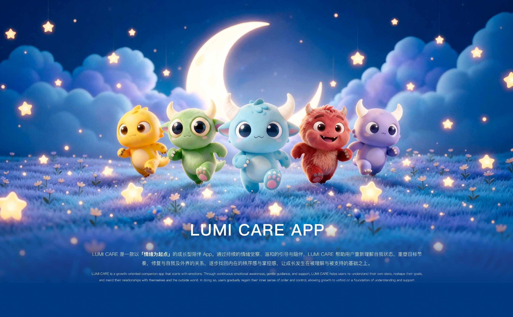
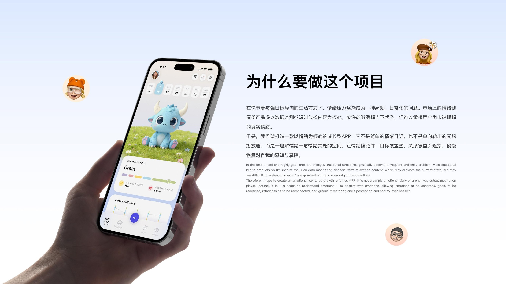
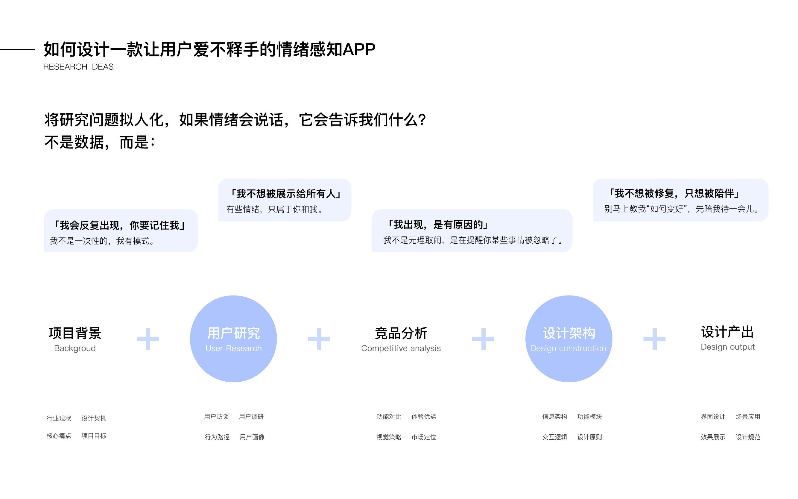
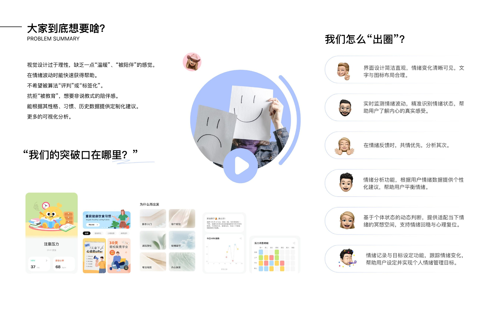
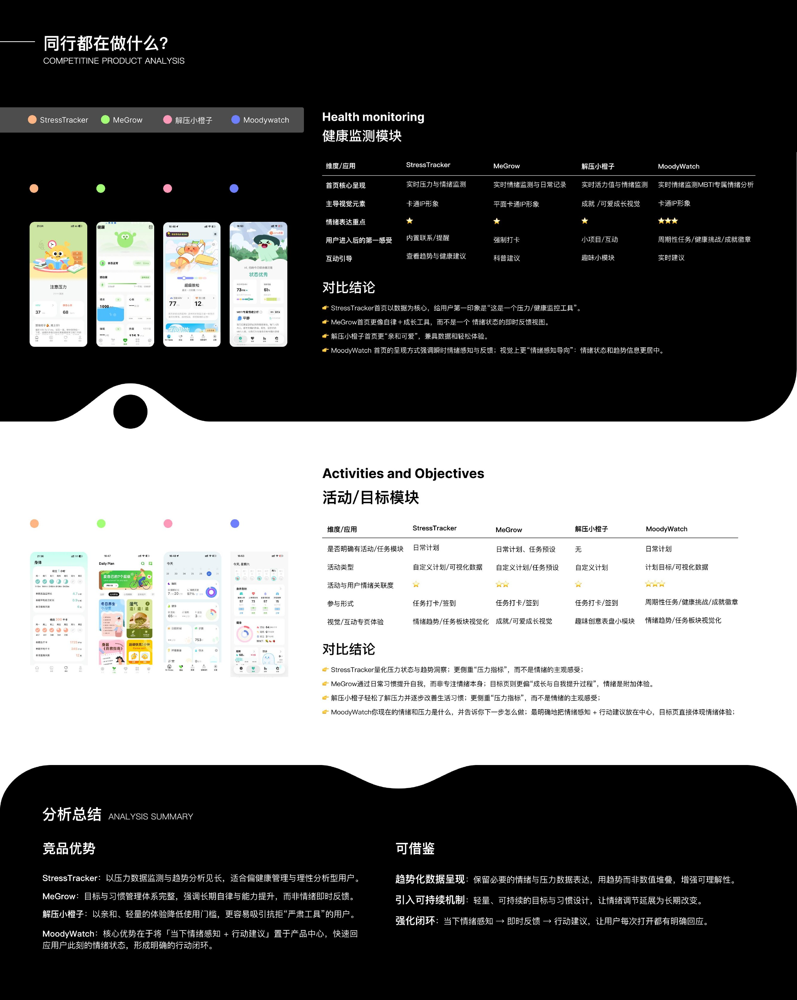
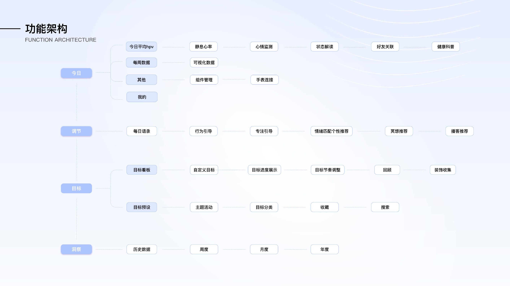
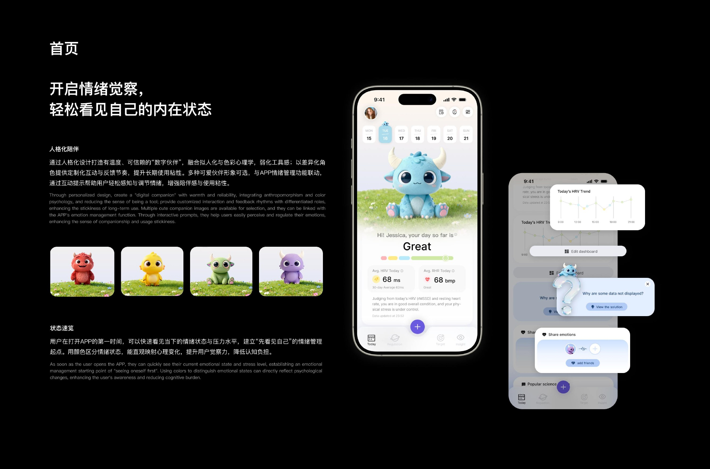
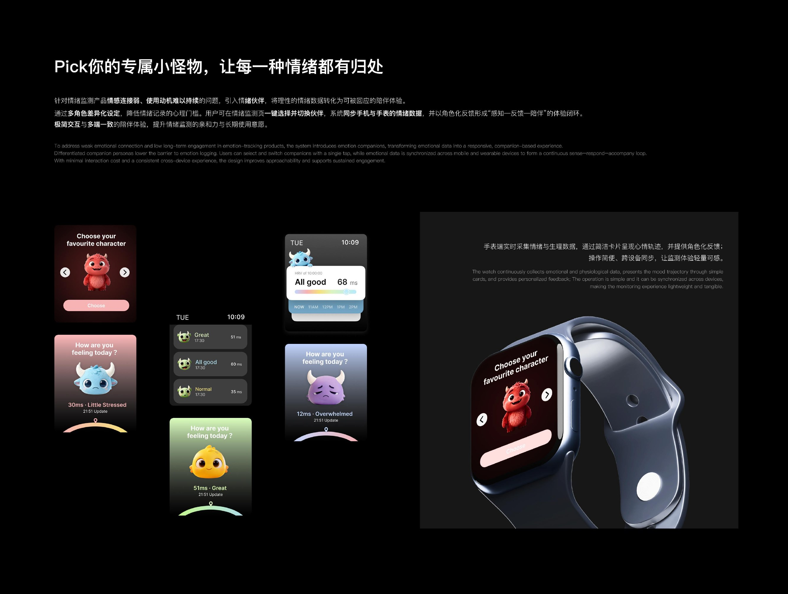
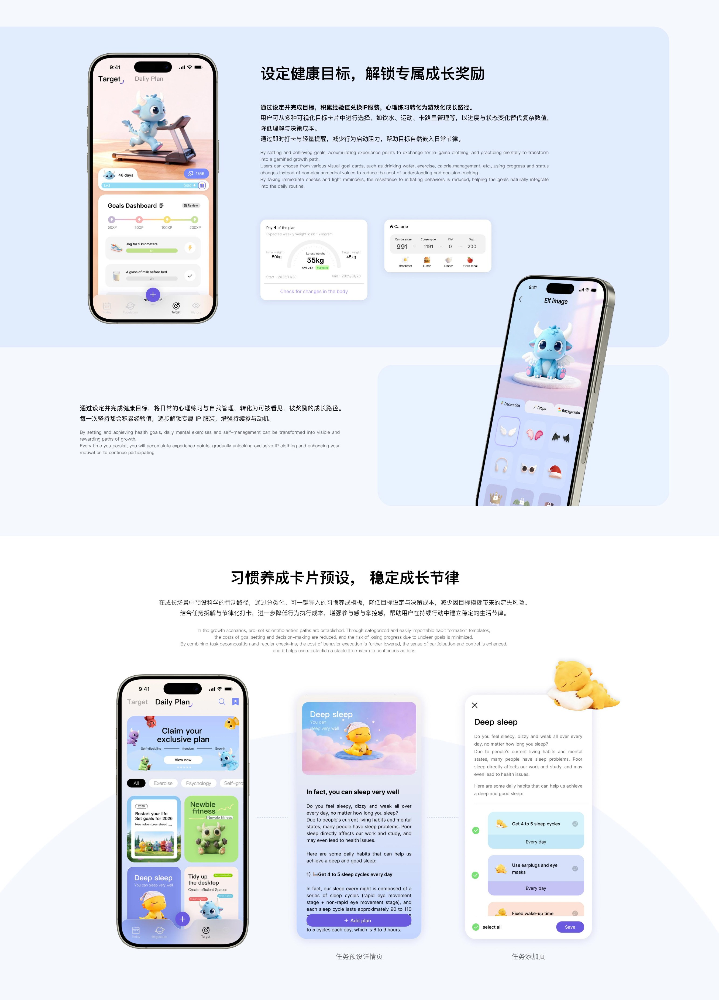
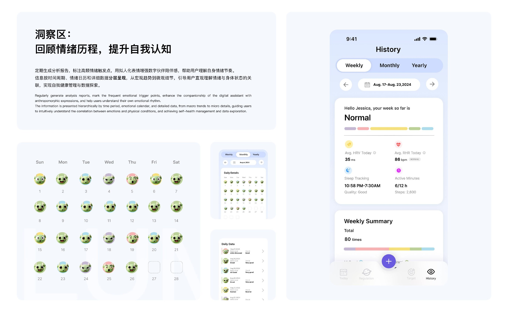

PROJECT LUMI CARE
LUMI CARE APP
从情绪觉察与温和陪伴出发，帮助用户重新理解自我状态，在持续探索中逐步找回内在秩序与掌控感。
LUMI CARE / EMOTIONAL CARE
项目详情










PROJECT LUMI CARE
从情绪觉察与温和陪伴出发，帮助用户重新理解自我状态，在持续探索中逐步找回内在秩序与掌控感。
LUMI CARE / EMOTIONAL CARE









